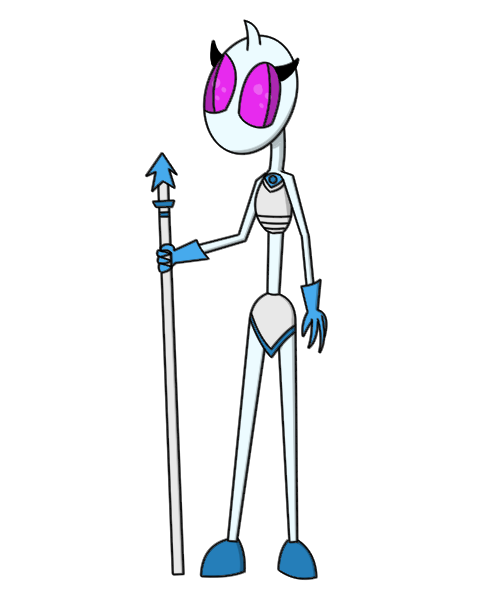

Glow is a Marathon scenario meant to be an unexpected but easy for me to make campaign. It's influenced by and based of Marathon Lost Lands which I yet have to finish. The game has a new (Or so) AI named Mea who's the main guidance for the game's protagonist, Soldat.

Mea the AI
The player will be in Human ships, on a planet and on a strange alien realm to fight the Pfhor and another rampant AI.
The music will bestow of music like the page's own track. Most by Tineidae. But that depends if the future says differently.